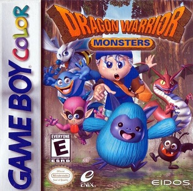

La Game Boy Color fue lanzada en 1998 como la evolución directa de la Game Boy original. Con una pantalla a color de 32,768 colores posibles, dio nueva vida a los juegos de Game Boy y trajo títulos exclusivos increíbles.
Compatible con todos los juegos originales de Game Boy, la GBC fue el puente perfecto entre la era monocromática y el futuro a color de las portátiles de Nintendo.
Dos regiones, 251 Pokémon y un reloj interno real. Considerados los mejores juegos de Pokémon de todos los tiempos por muchos fans.
Link viaja en el tiempo para salvar el mundo. Puzzles ingeniosos y un mundo rico en colores que lucía espectacular en la GBC.

Captura y cría monstruos en este RPG que compitió directamente con Pokémon. Una joya escondida de la Game Boy Color.